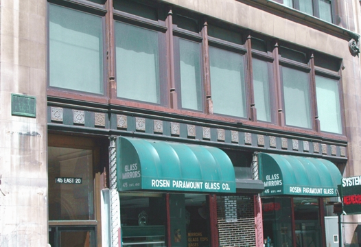
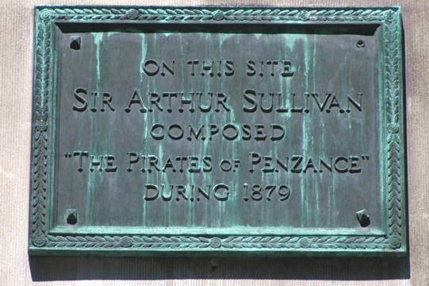

You are here: > > Plaque
The hotel in which Sullivan stayed during the latter part of 1879 in New York, and where he composed most of The Pirates of Penzance has been demolished. But the building which now stands on the site bears a plaque to commemorate the fact. The photographs have been contributed by Jeff Dailey.


|
Page Created 20 August, 2011